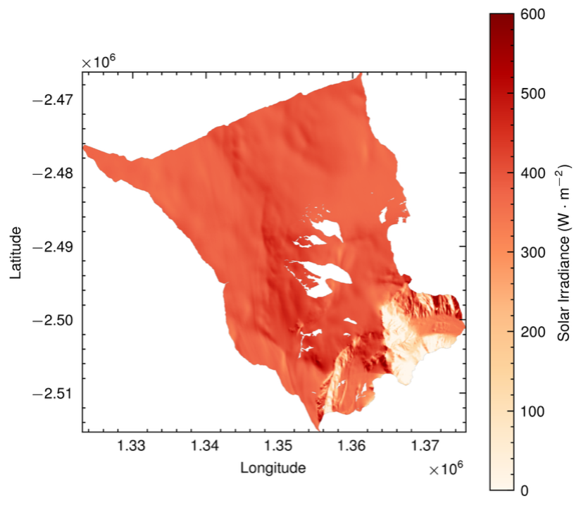

Supervised by Dr Alex Bradley, this project aims to quantify how slope and aspect, cast shadows, and self-shading influence surface mass balance across individual glaciers. This involves the redevelopment of Olson and Rupper's (2019) topographic shading model, and integrating it with Hock's (1999) modified temperature-index model to quantify how topographic controls propagate through solar irradiance, potential surface melt, and ultimately, surface mass balance.

← Back to main page